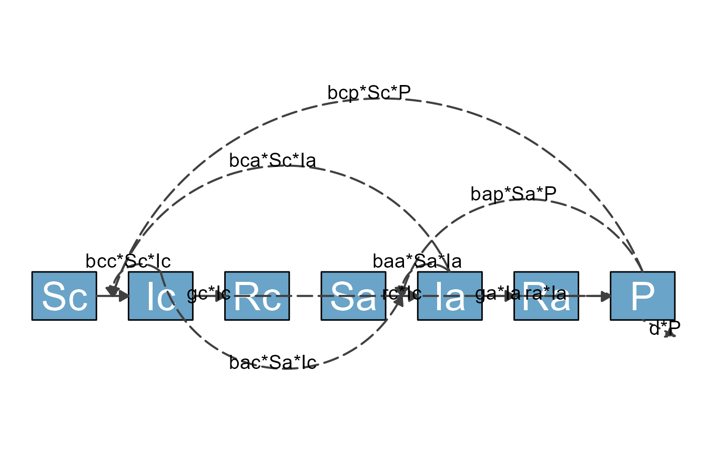

Overview
flowdiagramr is designed to create nice-looking diagrams for compartmental simulation models and other kinds of scenarios where a model with compartments/variables/nodes and flows/connections/edges is needed. The user provides the compartments and the flows, and gets as return a model diagram in ggplot format, as well as code that created the diagram. This allows potentially complete customization of the diagram.
Terminology
The kinds of models and diagrams we are discussing here are used in many different areas of science. That also means there are many different ways and words to describe these models. What we mainly refer to as compartments or variables is also known as stocks or nodes. Similarly, what we mainly refer to as flows or processes is also known as connections or edges. Other terminology exists. While we try to use variables and flows as consistently as possible, we might occasionally accidentally use one of the other terms. We hope by showing examples it will be clear.
Starting Example
Here is a simple example to illustrate what flowdiagramr does.
Consider the Susceptible-Infected-Recovered (SIR) model which forms the basis of many models used in infectious disease epidemiology. For this model, we have 3 compartments/variables, name susceptible individuals, S, infected/infectious individuals, I, and recovered/removed individuals, R. We also have 2 processes/flows, one process by which susceptible individuals become infected at some rate after contact with infectious individuals, b*S*I and a process by which infected individuals recover at some rate, g*I.
Written out as differential equations, the model looks like this
\[ \begin{aligned} \dot S & = - b S I \\ \dot I & = b S I - g I \\ \dot R & = g I \end{aligned} \]
A diagram for the model looks as follows

Flow diagram for basic SIR model
The purpose of flowdiagramr is to automatically create this diagram for you if you supply the model specification. Here is how.
Specify the model
flowdiagramr requires that the model is specified as a simple list structure. This list needs to have 2 elements, the variable/compartment labels and the processes/flows for each compartment. For the model above, this looks as follows:
variables = c("S","I","R")
flows = list(S_flows = c("-b*S*I"),
I_flows = c("b*S*I","-g*I"),
R_flows = c("g*I"))
mymodel = list(variables = variables, flows = flows)Model specification conventions and requirements:
- The main list (called
mymodelabove) can have any name. - Inside this list need to be two elements called
variablesandflows, which contain - surprise! - the variable and flow information. - Variables need to be supplied as a vector of strings, and need to start with an upper-case letter and can be any combination of letters and numbers.
- Model flows consist of variables and parameters, combined by basic
mathematical expressions. Currently allowed are
+, -, *, (),/,^. Mathematical operations such aslog,sin, etc. are currently not supported (but you can still possibly useflowdiagramr- read on). - All parameters need to start with a lower-case letter and can be any combination of letters and numbers.
- The flows for each variable need to be named
NN_flowswhereNNcorresponds to the variable name. - Each flow needs to be provided as a valid mathematical/R expression,
that would evaluate in R if you assigned numbers to each parameter and
variable. For instance you need to write
b*S*I, writing it asbSIwill not work. - Flows need to be provided as a list, with flows for each variable as a vector.
- Minus signs for outflows are required, plus signs for inflows are optional.
If these specifications sound confusing, just look at several of the examples and you’ll quickly understand the whole setup.
Create elements needed for diagram generation
Once you specified your model in the list structure just described, the next step is to process the model, then make the diagram. This happens in two steps, which has the advantage of easier diagram modification.
In a first step, you send your model to the
prepare_diagram() function to prepare it for later
plotting.
diagram_list <- prepare_diagram(mymodel)The diagram_list object returned by this function
contains a list of data frames that is used to make the diagram. We’ll
skip over this for now and revisit it in a later vignette.
Make the diagram
Now it’s time to make the diagram. This is done by sending the object
you got by calling prepare_diagram() to the
make_diagram() function, like so
my_diagram <- make_diagram(diagram_list)make_diagram returns a ggplot2 object (here called
my_diagram).
You you can plot the object with
plot(my_diagram)
or save it into a file, e.g. with
ggplot2::ggsave("sirdiagram.png",my_diagram)To re-cap, these lines of code allowed us to specify and make a fairly simple flow diagram:
#specify model
mymodel = list( variables = c("S","I","R"),
flows = list(S_flows = c("-b*S*I"),
I_flows = c("b*S*I","-g*I"),
R_flows = c("g*I"))
)
#prepare diagram
diagram_list <- prepare_diagram(mymodel)
#make diagram
my_diagram <- make_diagram(diagram_list)
#plot diagram
plot(my_diagram)Another example
Here is another example, the classical predator-prey model (also known as Lotka-Volterra model). This model has two compartments/variables. The model is widely used in Ecology. It can also be used in Immunology to model pathogen and immune response. In the context of immunology, the immune response (e.g. Macrophages or NK cells) are the predators, and the pathogens (e.g. some bacteria) are the prey. We’ll label them Imm and Pat, just to show that one can use labels that are longer than a single letter. We will also include the following processes/flows:
-
g*Pat*(1-Pat/pmax): Bacteria/Pathogen grow/divide at some maximum rate (which we label g) and saturate as they approach some maximum carrying capacity, pmax. -
-dP*Pat: Bacteria/Pathogen die at a natural death rate (which we label dP). -
-k*Pat*Imm: Bacteria/Pathogen are killed by the immune response at some rate k. -
r*Pat*Imm: The immune response grows proportional to the amount of bacteria/pathogen and itself at some rate r. -
-dI*Imm: The immune response decays at some rate (which we label dI).
To generate the diagram, you follow the same steps as above. First, create the model structure
variables = c("Pat","Imm")
flows = list(Pat_flows = c("g*Pat*(1-Pat/pmax)", "-dP*Pat", "-k*Pat*Imm"),
Imm_flows = c("r*Pat*Imm", "-dI*Imm"))
mymodel = list(variables, flows)Again, remember that all flows need to be valid mathematical
expressions, i.e. if you typed them into R, they would work
(provided you assigned numerical values to each variable and
parameter).
Next, you use the same steps as above to create the model diagram. First, we prepare the diagram.
diagram_list <- prepare_diagram(mymodel)Now we can make and plot it.
my_diagram <- make_diagram(diagram_list)
plot(my_diagram)It is possible to change the look of the diagram fairly easily using
the update_diagram() function. You’ll learn more about this
in a later vignette. Here is a quick preview. You provide the
update_diagram() function with the
diagram_list object produced by make_diagram()
and tell it what adjustments you want to make by specifying
diagram_settings. You get an updated object, which you can
then turn into a diagram.
diagram_list_v2 <- update_diagram(diagram_list,
diagram_settings =
list(var_fill_color = c(Pat = 'blue', Imm = 'red'),
flow_line_type = c(main = "dashed", external = "solid"),
flow_line_size = c(all = 1.5)
)
)Here is the figure for the updated diagram.
my_diagram <- make_diagram(diagram_list_v2)
plot(my_diagram)For completeness, here are the ODE equations for the model we just plotted.
\[ \begin{aligned} \frac{d}{dt} Pat & = g * Pat (1-\frac{Pat}{p_{max}}) - d_P * Pat - k * Pat * Imm \\ \frac{d}{dt} Imm & = r * Pat * Imm - d_I * Imm \end{aligned} \]
As a reminder, for the purpose of generating the diagram, it is not required to write down mathematical equations for the model. In fact, you can make diagrams for any model that consists of compartments and flows. The underlying model could be a set of ordinary differential equations (ODEs), or a discrete time model, or a stochastic one. It can even be a completely different system comprising compartments and flows, one that is not based on simulation models. This is discussed in the Making non-model based diagrams vignette.
One more example
We’ll finish with one more model, this time a more complex one.
This is an SIR-type model that also includes an environmental
component, i.e. infected individuals can shed the pathogen into the
environment (e.g., Cholera in water) and susceptible individuals can get
infected that way. We still allow for direct transmission. On top of
that, we are considering 2 distinct groups (e.g., children and adults)
and stratify by them. They are assumed to shed into the same environment
(which we label P) at rates ra and
rc. Transmission occurs at rates \(b_ij\), where \(i\) is the infected category (including the
infected environment) and \(j\) the
susceptible category.
This gives us 3 SIR compartments each for adults and children, i.e., 6, and 1 environmental compartment, for a total of 7 compartments.
Here is the model specified in the format needed for flowdiagramr.
variables = c("Sc","Ic","Rc","Sa","Ia","Ra","P")
flows = list(Sc_flows = c("-bcc*Sc*Ic","-bca*Sc*Ia","-bcp*Sc*P"),
Ic_flows = c("bcc*Sc*Ic","bca*Sc*Ia","bcp*Sc*P","-gc*Ic"),
Rc_flows = c("gc*Ic"),
Sa_flows = c("-bac*Sa*Ic","-baa*Sa*Ia","-bap*Sa*P"),
Ia_flows = c("bac*Sa*Ic","baa*Sa*Ia","bap*Sa*P","-ga*Ia"),
Ra_flows = c("ga*Ia"),
P_flows = c("rc*Ic","ra*Ia","-d*P")
)
mymodel = list(variables = variables, flows = flows)Before we start making the diagram for this model, it is worth pointing out some current limitations of flowdiagramr. You might have noticed that each flow term above is defined separately. If you were to write down the model in math formulation, you would likely not do that. Instead, you would probably write something like this, with flow terms combined using parentheses:
variables = c("Sc","Ic","Rc","Sa","Ia","Ra","P")
flows_wrong = list(Sc_flows = c("-Sc*(bcc*Ic+bca*Ia+bcp*P)"),
Ic_flows = c("Sc*(bcc*Ic+bca*Ia+bcp*P)","-gc*Ic"),
Rc_flows = c("gc*Ic"),
Sa_flows = c("-Sa*(bac*Ic+baa*Ia+bap*P)"),
Ia_flows = c("Sa*(bac*Ic+baa*Ia+bap*P)","-ga*Ia"),
Ra_flows = c("ga*Ia"),
P_flows = c("rc*Ic","ra*Ia","-d*P")
)
model_list_wrong = list(variables = variables, flows = flows_wrong)Unfortunately, flowdiagramr currently cannot parse flows that are grouped like this (we hope that a future version will). If you try to use this model list to prepare the diagram, you will receive a (hopefully informative) error message.
diagram_list <- prepare_diagram(model_list_wrong)
#> Error in prepare_diagram(model_list_wrong): flowdiagramr cannot currently process flows that include an interaction between more than two variables.
#> Consider breaking flows apart.In general, prepare_diagram checks your
model_list object and tries to determine if everything is
ok. As an example, here is the model with some typos. We accidentally
put minus (“-”) signs in front of all the Ia_flows.
variables = c("Sc","Ic","Rc","Sa","Ia","Ra","P")
flows_wrong2 = list(Sc_flows = c("-bcc*Sc*Ic","-bca*Sc*Ia","-bcp*Sc*P"),
Ic_flows = c("bcc*Sc*Ic","bca*Sc*Ia","bcp*Sc*P","-gc*Ic"),
Rc_flows = c("gc*Ic"),
Sa_flows = c("-bac*Sa*Ic","-baa*Sa*Ia","-bap*Sa*P"),
Ia_flows = c("-bac*Sa*Ic","-baa*Sa*Ia","-bap*Sa*P","-ga*Ia"),
Ra_flows = c("ga*Ia"),
P_flows = c("rc*Ic","ra*Ia","-d*P"))
model_list_wrong2 = list(variables = variables, flows = flows_wrong2)This means the model is not properly specified. flowdiagramr throws an error suggesting where you might have gone wrong.
diagram_list <- prepare_diagram(model_list_wrong2)
#> Error in prepare_diagram(model_list_wrong2): There are duplicate flows across variables that failed to
#> parse easily. Are there '+' signs where you intended
#> '-' signs, or vice versa.Not all model bugs return informative error messages. There are likely instances where you have typos or other mistakes in your model, or you try to include components in our model that flowdiagramr currently can’t handle, and you end up with a confusing error message from flowdiagramr. In this case, the first place to check for bugs is in your model specification, especially your model flows. Of course, you could have also found a bug in flowdiagramr, in which case please file an issue on the Github site of the package!
The reverse is also true. It might be that flowdiagramr doesn’t flag problems with your model, even if there are any. In that case, you might either get an error message later in the process, or you’ll get a weird looking diagram.
Now, let’s go back to the first, proper model specification. We’ll
first prepare the diagram. Here, we supply
prepare_diagram() with optional settings. This is just
meant as another quick preview. The next vignette will discuss this in
detail.
model_settings = list(varbox_x_size = 2, varbox_y_size = 1.5)
diagram_list <- prepare_diagram(mymodel, model_settings)Now we make the diagram and plot it.
model_plot <- make_diagram(diagram_list)
plot(model_plot)
As you can see, while the most basic approach of using flowdiagramr that we just explained gets you somewhere, you might not be able to produce a publication-quality diagram using just the default settings. Fortunately, flowdiagramr gives you ways to easily customize things to give you great-looking diagrams! (At least we think so, but we might be a bit biased.)
Next steps
You just learned the basics of using flowdiagramr to produce a diagram. The default diagram you get this way might look ok (for simple models), but it likely won’t be great. Therefore, most of the time you will likely want to make modifications to get a diagram that looks the way you want. There are different ways to do this. To start learning these different ways, you should continue with this vignette.